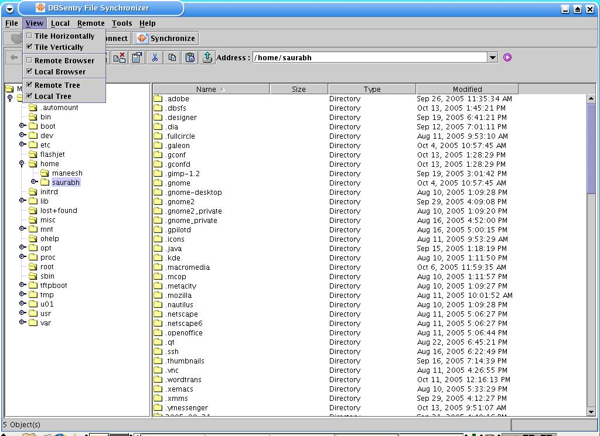
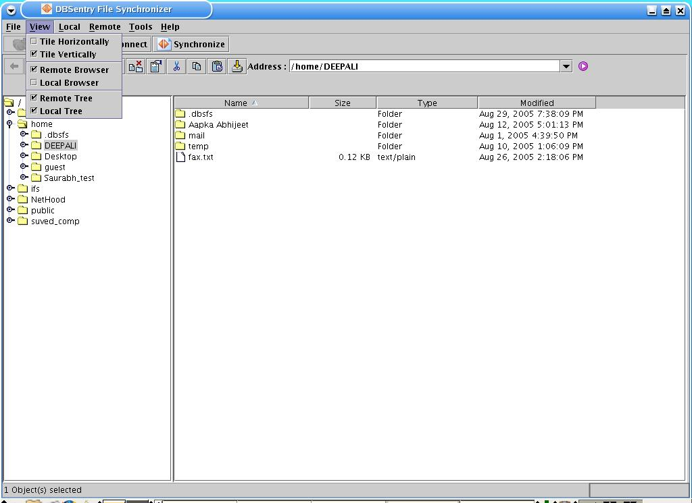

View Remote Browser:
Select View->Remote Browser menu option at FileSync startup window.Check the 'Remote Browser' menu option to view Remote Browser,uncheck the option to hide it.

View Local Browser:
Select View->Remote Tree menu option at FileSync startup window.Check the 'Remote Tree' menu option to view Remote Tree, uncheck the option to hide it.
